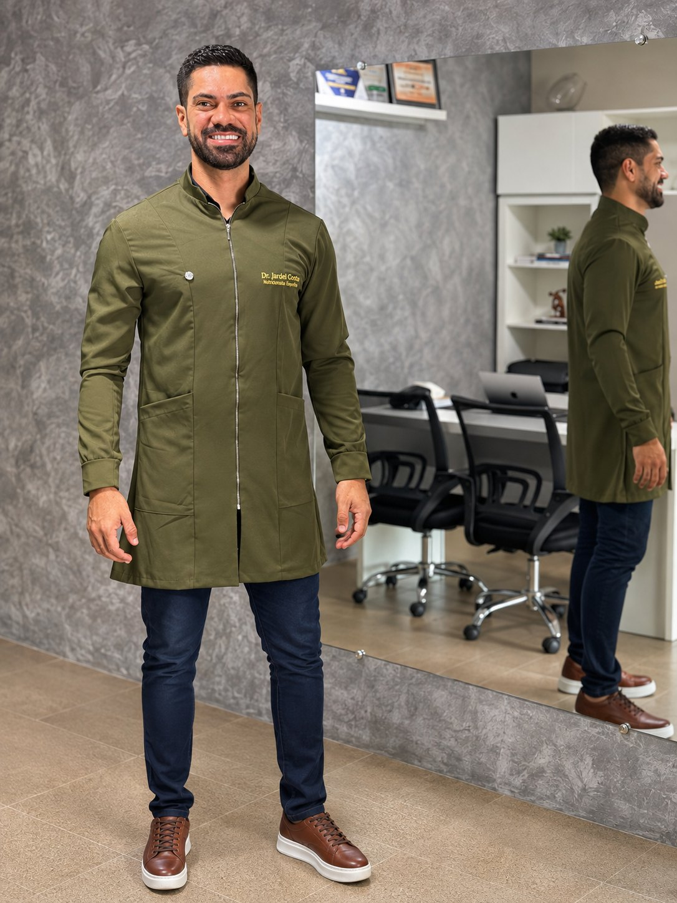
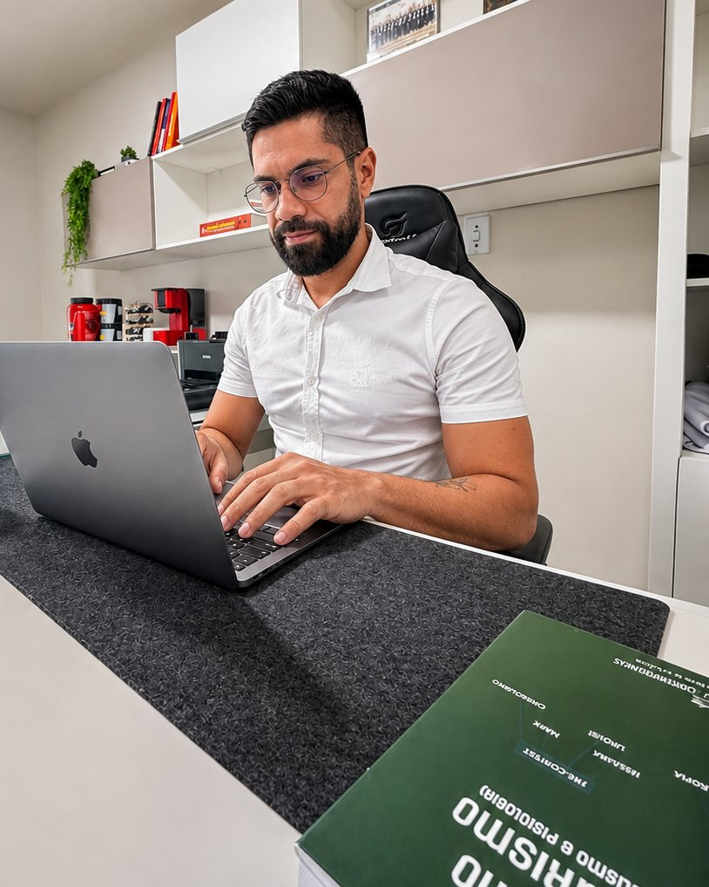

Nutricionista e Personal · Saúde depois dos 40
Consultoria online com planejamento alimentar e treino individualizados, montados por um único profissional habilitado nas duas áreas. Para emagrecer, ganhar força e cuidar da saúde com uma rotina possível.
Planos a partir de R$ 99 · Nutrição + treino em todos os pacotes

Para o seu objetivo
E para qualquer pessoa que queira cuidar disso desde já. Comida de verdade e treino possível, ajustados à sua rotina.
Perder gordura preservando massa muscular, sem dietas impossíveis de manter.
Preservar e desenvolver músculo, com treino e proteína no ponto certo para a sua idade.
Saúde cardiometabólica, energia e exames acompanhados com orientação profissional.
Musculação, corrida, ciclismo, crossfit e hyrox: alimentação e treino para render mais e recuperar melhor.
Por que funciona
Seu cardápio é pensado junto com o seu treino. Nada de orientações que se contradizem.
Montado para seus horários, preferências e realidade. Nada de modelo pronto.
Plano alimentar e treino na palma da mão, fáceis de consultar no mercado ou na academia.
O plano acompanha sua evolução e é ajustado conforme a necessidade.
Você não fica sozinho entre um ajuste e outro: tira dúvidas direto comigo.
Sem terrorismo nutricional e sem promessas milagrosas. Constância com método.
Consultoria online
Dois formatos de acompanhamento e quatro períodos. Quanto mais tempo, menor o valor por mês e mais consistente o resultado.
Como funciona a consultoria
Digital Essencial ou Online com Vídeo, no período que fizer sentido para você.
Você responde o formulário e eu faço a avaliação profissional, conversando com você quando necessário.
Você recebe planejamento alimentar e treino individualizados no aplicativo.
Check-ins, ajustes e suporte pelo WhatsApp durante todo o período do plano.
Resultados reais
Números medidos em avaliação de composição corporal. Mais do que peso na balança: menos gordura, mais músculo e mais saúde.
Meu caro, está muito bom o resultado, já perdi 5 kg. As roupas já estão folgadas: uma calça que não dava, hoje provei e entrou de boa. Estou muito feliz.
Graças a Deus e à sua consultoria, hoje sou outra pessoa.
O meu de hoje já foi 114,8. Passei dos 7 kg!
Resultados individuais, publicados com autorização. Cada pessoa evolui no seu ritmo, de acordo com seu ponto de partida e sua constância.

Quem te acompanha
Nutricionista · CRN 40144-P | Profissional de Educação Física · CREF 5533-G/PE
Sou nutricionista e personal, com pós-graduação em Nutrição Esportiva e em Fisiologia do Exercício. Meu trabalho é unir alimentação e treino em uma estratégia só, com foco em saúde, força e qualidade de vida depois dos 40.
Trabalho com treinamento físico e desenvolvimento humano desde 2006, com experiência em musculação, corrida, ciclismo, crossfit, hyrox e outras modalidades. Coordenei duas academias antes de fundar a minha, a @acadmeta.
Essa prática diária com quem treina de verdade está em cada plano que monto, seja online para todo o Brasil ou presencial em Lajedo-PE.
Consulta presencial premium
Av. Dezenove de Maio, 390, Centro, Lajedo-PE, com horário agendado. Consulta avulsa com avaliação presencial e 60 dias de acompanhamento digital pelo WhatsApp e aplicativos.
R$ 350
Avaliação com antropometria, adipometria e perimetria, exames conforme indicação, plano alimentar e treino.
Agendar presencialR$ 250
Avaliação presencial, análise de exames e planejamento alimentar individualizado.
AgendarCada consulta presencial é paga individualmente e não inclui retorno presencial.
Dúvidas frequentes
O planejamento é individualizado do mesmo jeito: alimentação e treino montados por mim, com avaliação profissional, suporte e ajustes. A diferença é que você não precisa se deslocar.
Os dois têm nutrição e treino individualizados, app, suporte pelo WhatsApp e ajustes. O Online com Vídeo inclui videoconsultas individuais agendadas: 1 no mensal, 2 no trimestral, 3 no semestral e 4 no anual.
O mensal é uma boa porta de entrada. Para mudanças consistentes de composição corporal e hábitos, o trimestral costuma ser o melhor ponto de partida, porque dá tempo de ajustar o plano à sua resposta.
Não. O plano é montado com base nas suas preferências e na sua rotina, inclusive com opções práticas do dia a dia, para ser possível de seguir.
Sim. O treino é prescrito para o seu nível atual, seu histórico e o que você tem disponível, e evolui junto com você.
É uma consulta avulsa no consultório em Lajedo-PE, com avaliação presencial e 60 dias de acompanhamento digital. Cada consulta é paga individualmente, sem retorno presencial incluso.
Escolha o plano acima e clique em "Quero este plano". Você cai no meu WhatsApp com a mensagem pronta e eu te passo os próximos passos.
Consultoria online para todo o Brasil, a partir de R$ 99.